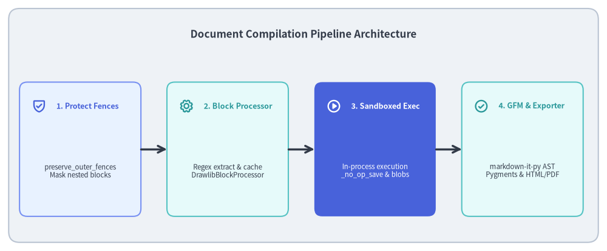
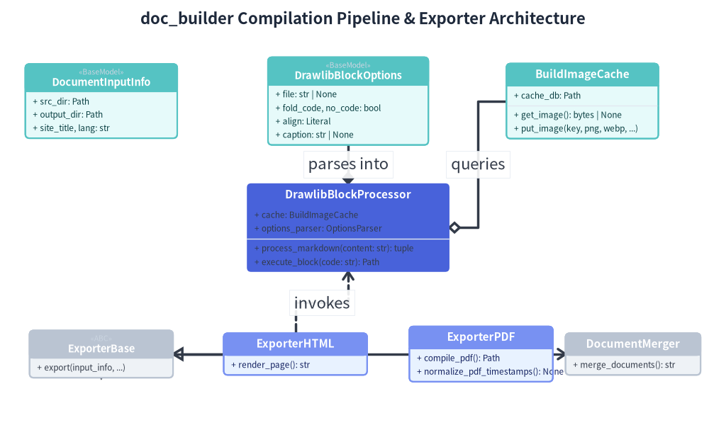
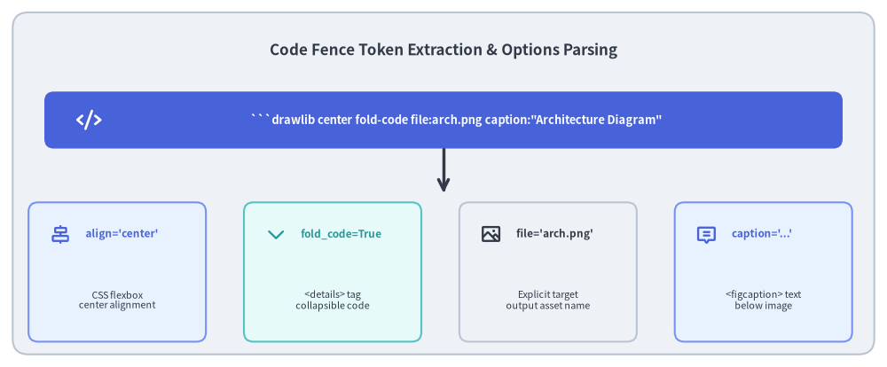

Markdown Tokenization & Code Block Processor
The core engine enabling "Illustrated Documentation as Code" is Drawlib's document compilation pipeline (_builder/doc_builder/). Rather than relying on fragile regex string substitutions or headless browser preprocessing, Drawlib tokenizes Markdown documents into an Abstract Syntax Tree (AST), identifies embedded drawing blocks, executes Python code in-process, and transforms code tokens into responsive web elements and vector image assets.
This document details the tokenization lifecycle, code fence option parsing, and sandbox execution mechanics.

Source Code
from drawlib.canvas import save, setup
from drawlib.icons import phosphor
from drawlib.lines import line
from drawlib.shapes import rectangle
from drawlib.styles import Styles
from drawlib.text import text
setup(width=140, height=58)
rectangle((70, 29), width=136, height=54, style=Styles.Neutral.patch(shape_r=2.5))
text(
(70, 50),
"Document Compilation Pipeline Architecture",
style=Styles.DarkBold.patch(text_size=12.2),
)
steps = [
(18.5, "1. Protect Fences", "preserve_outer_fences\nMask nested blocks", phosphor.shield_check, Styles.PrimaryNeutral, Styles.PrimaryBold),
(52.5, "2. Block Processor", "Regex extract & cache\nDrawlibBlockProcessor", phosphor.gear, Styles.SecondaryNeutral, Styles.SecondaryBold),
(86.5, "3. Sandboxed Exec", "In-process execution\n_no_op_save & blobs", phosphor.play_circle, Styles.PrimaryFlat, Styles.WhiteBold),
(120.5, "4. GFM & Exporter", "markdown-it-py AST\nPygments & HTML/PDF", phosphor.check_circle, Styles.SecondaryNeutral, Styles.SecondaryBold),
]
for x, title, desc, icon_func, card_style, icon_style in steps:
rectangle((x, 23.5), width=28, height=31, style=card_style.patch(shape_r=1.8))
icon_func((x - 9.5, 33.5), width=3.4, style=icon_style)
text((x - 5.5, 33.5), title, style=icon_style.patch(halign="left", text_size=9.0))
sub_style = Styles.White if card_style == Styles.PrimaryFlat else Styles.Dark
text((x, 18.5), desc, style=sub_style.patch(text_size=8.2))
for i in range(3):
x_from = steps[i][0] + 14.0
x_to = steps[i + 1][0] - 14.0
line((x_from, 23.5), (x_to, 23.5), arrow_head="->", style=Styles.DarkBold)
save()
1. Concept: The 3-Stage Text & AST Hybrid Pipeline
Unlike naive documentation generators that either rely exclusively on fragile regex replacements or heavy headless browser rendering, Drawlib implements a high-performance 3-Stage Text & AST Hybrid Pipeline:
[Markdown Source]
│
▼
Stage A: Outer Fence Protection (detector.preserve_outer_fences)
│ Masks nested code blocks inside markdown quotes/lists
▼
Stage B: Block Extraction & Execution Sandbox (DrawlibBlockProcessor)
│ Extracts ```drawlib fences via regex
│ Queries BuildImageCache (SQLite WAL)
│ Executes code with _no_op_save and renders image assets
│ Substitutes fences with HTML <figure> tags or Markdown image links
▼
Stage C: Downstream GFM AST Parsing (markdown-it-py)
Parses remaining Markdown into HTML/AST tokens
Applies Pygments syntax highlighting
Rewrites relative .md links to .html
Why a Hybrid Pipeline?
- Preserving Drawing Semantics: Intercepting and executing drawing blocks before full Markdown AST tokenization allows Drawlib to insert semantic
<figure>elements, responsive<details>toggles, and image references seamlessly into the document flow. - Deterministic Output Caching: Blocks are hashed and resolved against
.drawlib/cache.dbbefore any heavy parsing or execution takes place, achieving sub-millisecond incremental builds. - Robust Syntax Highlighting: Surrounding Markdown prose and standard non-drawlib code blocks are handled cleanly by
markdown-it-pyand Pygments without interference.
2. Positioning: Compiler Architecture & Core Models
The document builder subsystem (_builder/doc_builder/) decomposes responsibilities into dedicated Pydantic configuration models, processing engines, and format exporters:

Source Code
from drawlib.canvas import save, setup
from drawlib.diagrams.class_diagram import ClassDiagram, ClassNode
from drawlib.styles import Styles
setup(width=168, height=102)
cd = ClassDiagram(
node_style=Styles.Neutral,
edge_style=Styles.DarkBold,
edge_text_style=Styles.Dark,
title="doc_builder Compilation Pipeline & Exporter Architecture",
)
# Core Models (Row 1)
doc_info = cd.add(ClassNode(name="DocumentInputInfo", stereotype="BaseModel", width=36.0, style=Styles.SecondaryNeutral), xy=(24.0, 78.0))
doc_info.add_attribute("src_dir: Path")
doc_info.add_attribute("output_dir: Path")
doc_info.add_attribute("site_title, lang: str")
block_opts = cd.add(ClassNode(name="DrawlibBlockOptions", stereotype="BaseModel", width=38.0, style=Styles.SecondaryNeutral), xy=(82.5, 78.0))
block_opts.add_attribute("file: str | None")
block_opts.add_attribute("fold_code, no_code: bool")
block_opts.add_attribute("align: Literal")
block_opts.add_attribute("caption: str | None")
cache_cls = cd.add(ClassNode(name="BuildImageCache", width=36.0, style=Styles.SecondaryNeutral), xy=(138.0, 78.0))
cache_cls.add_attribute("cache_db: Path")
cache_cls.add_method("get_image", return_type="bytes | None")
cache_cls.add_method("put_image", params="key, png, webp, ...")
# Core Processor (Row 2)
processor = cd.add(ClassNode(name="DrawlibBlockProcessor", width=48.0, style=Styles.PrimaryFlat), xy=(82.5, 48.0))
processor.add_attribute("cache: BuildImageCache")
processor.add_attribute("options_parser: OptionsParser")
processor.add_method("process_markdown", params="content: str", return_type="tuple")
processor.add_method("execute_block", params="code: str", return_type="Path")
# Exporters (Row 3)
exp_base = cd.add(ClassNode(name="ExporterBase", stereotype="ABC", width=34.0), xy=(24.0, 18.0))
exp_base.add_method("export", params="input_info, ...")
exp_html = cd.add(ClassNode(name="ExporterHTML", width=34.0, style=Styles.PrimaryNeutral), xy=(70.0, 18.0))
exp_html.add_method("render_page", return_type="str")
exp_pdf = cd.add(ClassNode(name="ExporterPDF", width=34.0, style=Styles.PrimaryNeutral), xy=(114.0, 18.0))
exp_pdf.add_method("compile_pdf", return_type="Path")
exp_pdf.add_method("normalize_pdf_timestamps", return_type="None")
merger = cd.add(ClassNode(name="DocumentMerger", width=32.0), xy=(150.0, 18.0))
merger.add_method("merge_documents", return_type="str")
# Relationships
cd.connect(processor, block_opts, "composition", start_side="top", end_side="bottom", label="parses into")
cd.connect(processor, cache_cls, "aggregation", start_side="right", end_side="left", label="queries")
cd.connect(exp_html, exp_base, "inheritance", start_side="left", end_side="right")
cd.connect(exp_pdf, exp_base, "inheritance", start_side="left", end_side="bottom")
cd.connect(exp_pdf, merger, "dependency", start_side="right", end_side="left")
cd.connect(exp_html, processor, "dependency", start_side="top", end_side="bottom", label="invokes")
cd.draw(xy=(0.0, 0.0))
save()
Code Fence Attribute Parser
Drawlib code fences support declarative metadata options on the opening line:

Source Code
from drawlib.canvas import save, setup
from drawlib.icons import phosphor
from drawlib.lines import line
from drawlib.shapes import rectangle
from drawlib.styles import Styles
from drawlib.text import text
setup(width=140, height=58)
rectangle((70, 29), width=136, height=54, style=Styles.Neutral.patch(shape_r=2.5))
text(
(70, 50),
"Code Fence Token Extraction & Options Parsing",
style=Styles.DarkBold.patch(text_size=12.2),
)
# Top: Raw Code Fence Header
rectangle((70, 39), width=126, height=9, style=Styles.PrimaryFlat.patch(shape_r=1.5))
phosphor.code((14, 39), width=4.0, style=Styles.WhiteBold)
text(
(72, 39),
'```drawlib center fold-code file:arch.png caption:"Architecture Diagram"',
style=Styles.WhiteBold.patch(text_size=9.2),
)
line((70, 34.5), (70, 27.5), arrow_head="->", style=Styles.DarkBold)
# Bottom: 4 Parsed Attributes
attributes = [
(18.5, "align='center'", "CSS flexbox\ncenter alignment", phosphor.align_center_horizontal, Styles.PrimaryNeutral, Styles.PrimaryBold),
(52.5, "fold_code=True", "<details> tag\ncollapsible code", phosphor.caret_down, Styles.SecondaryNeutral, Styles.SecondaryBold),
(86.5, "file='arch.png'", "Explicit target\noutput asset name", phosphor.image, Styles.Neutral, Styles.DarkBold),
(120.5, "caption='...'", "<figcaption> text\nbelow image", phosphor.chat_centered_text, Styles.PrimaryNeutral, Styles.PrimaryBold),
]
for x, title, desc, icon_func, card_style, icon_style in attributes:
rectangle((x, 15), width=28, height=22, style=card_style.patch(shape_r=1.5))
icon_func((x - 9.0, 21), width=3.4, style=icon_style)
text((x - 5.0, 21), title, style=icon_style.patch(halign="left", text_size=8.5))
text((x, 10.5), desc, style=Styles.Dark.patch(text_size=7.8))
save()
Supported Header Options
file:<name>.<ext>: Specifies the output filename (e.g.file:pipeline.pngorfile:diagram.svg). If omitted, Drawlib generates an automatic deterministic hash name.fold-code/no-code: Controls code visibility.fold-codewraps Python source in an interactive HTML<details>disclosure toggle;no-codesuppresses source display completely.center/left/right: Controls container alignment via CSS flexbox.caption:"...": Renders an accessible, semantic<figcaption>beneath the illustration.
3. Details: Sandboxed Execution & Error Reporting
3.1. In-Process Sandbox & _no_op_save
When a code block must be executed (on cache miss):
- Scope Isolation:
DrawlibBlockProcessorconstructs a dedicatedglobals()dictionary populated with project-wide imports (styles.py,utils.py), isolating execution from the compiler's own internal namespace. - Context Path Injection: The document's source directory is temporarily prepended to
sys.path, allowing blocks to load local assets (_assets/) and helper scripts seamlessly. _no_op_saveMonkeypatching: The compiler automatically intercepts and patchescanvas.save()to prevent user code from writing directly to disk before the processor captures and caches the rendered image buffers.
3.2. Accurate Line Number Error Diagnostics
If a Python exception occurs inside a drawing block:
- Drawlib catches the exception, inspects the traceback, and calculates the exact physical line number within the Markdown source file (
file.md:L142). - The build terminates immediately with an informative terminal message showing the offending code line, avoiding mysterious stack traces inside
exec().
Next, explore how the AST compiles into multiple formats in Multi-Target Exporters.